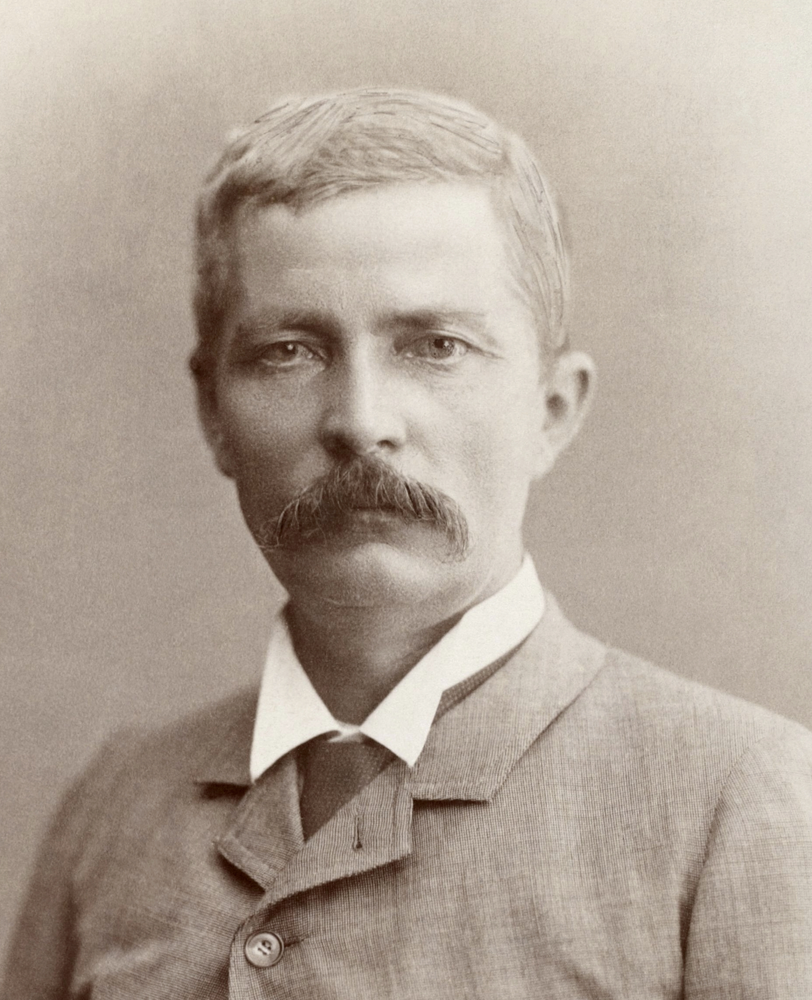

Das Okapi
Auf folgendes werde ich näher eingehen:
Grundinformationen
Verwandtschaft
Lebensraum
Feinde(Menschen eingeschlossen)
Revier/Sozialverhalten
Wie steht es um das Baumkänguru?
Fortpflanzung
Wie steht es um das Okapi?
Entdeckung
tote Verwante

Grundiformationen
Das Okapi(lat. Okapia johnstoni) lebt in den Regenwäldern
der Demokratischen Republik Kongo. Es ist ein Säugetier mit einer Länge von bis zu 2m.
Das Okapi wiegt 130-250kg, hat rotbraunes Fell und schwarz-weiß gefärbte Beine.
Es ist tagaktiv, ein Einzelgänger und ein Säugetier.
Es wird bis zu 2m lang und ernährt sich von Pflanzen.


Verwandtschaft
Okapis sind Paarhufer und gehören zur Familie der Giraffenartigen,weshalb sie manchen Menschen Waldgiraffe nennen. Das Okapi ist
näher mit den Giraffen( lat. Giraffa) als mit anderen Paarhufern verwant.Der Körperbau ähnelt aber mehr typischen Huftieren als den Giraffen.
Zu den Paarhufern gehören u.a auch: Schweine,Kamele,Giraffen,Hirsche,Flußpferde und Antilopen. Typische Huftiere sind z.b: Wildschweine,Rehe,Steinbock und der Rothirsch.


Lebensraum
Natürlich kommen Okapis nur in der Demokratischen Republik Kongo vor. Dort verbreiten sie sich größtenteils im Ituri-Regenwald.
Ansonsten gibt es sie in diversen Deutschen Zoos.
Der Ituri Regenwald befindet sich im Osten der DR Kongo. Der Namensgeber für das Waldgebiet ist der ihn durchquerende FLuss Ituri. Von den 63.00 quadratkilometern
ist ein fünftel UNESCO-Welterbe Okapi Wildtierreservat.
Aktuell gibt es im Berliner Zoo, im Frankfurter Zoo, im Leipziger Zoo und in den Zoologischen Gärten in Köln und Wuppertal Okapis.


Feinde
Das Okapi ist sehr scheu weshalb es von Tierkiller Nummer 1(uns)erst spät entdeckt wurde(mehr dazu in:"Entdeckung" und "Wie steht es um das Okapi").
Seine ursprünglichen Feinde sind u.a: das Krokodil und der Leopard.
Das Krokodil ist ein Reptil was in Flüssen, Seen und (z.b das Salzwasserkrokodil) auch im Meer heimisch ist.
Der Leopard gehört zur Familie der Katzen und ist in Afrika und Asien verbreitet.


Revier und Sozialverhalten
Ein Okapi ist in der regel ein Einelgänger und wird nur selten in Gruppen beobachtet. Ein Männchen legt am Tag ungefähr 4km zurück und agiert auf einer Fläche von
ungefähr 10 quadratkilometern. jüngere Tiere und Weibchen haben einen kleineren Aktionsraum. Männchen markieren ihr Revier mit Urin. Das Okapi ist wie bereits gesagt
kein vergleichsweise weit erforschtes Tier weshalb genauere Erkenntnis zum Sozialverhalten nicht vorliegen.
Fortpflanzung
Das Okapi muss sich nicht in einer bestimmten Jahreszeit fortpflanzen. Die Tragzeit des Weibchens beträgt 414-493 Tage. Das einzelne Jungtier steht
ungefähr eine halbe Stunde nach der Geburt auf, versteckt sich 1-2 Tage, wird von der Mutter gesäugt und auch verteidigt. Nach sechs Monaten werden sie in der regel
entwöhnt und sind mit drei Jahren ausgewachsen. In Gefangenschaft wurden Okapi-Weibchen mit 1,5 Jahren geschlechtsreif.


Wie steht es um das Okapi?
Der Bestand von wilden Okapis wird auf 10.000 bis 50.000 Exemplare geschätzt. Die größten Vorkommen konzentrieren sich auf die Okapi Reservate da den Okapis
von der einhemischen Bevölkerung nachgestellt wird. Begehrt ist die vorallem die Haut und das Fleisch. Im Juli 2012 wurde die Okapi-Station Epulu
angegriffen,vorhandene Ranger und Okapis getötet und die Sation abgebrannt. Auch wird der Lebensraum der Okapis zerstört was natürlich Folgen für die Population hat.
Entedckung
Für die Einheimische Bevölkerung(Bantu und die Mbuti)wahr das Okapi schon tausende Jahre bekannt und ein wilkommenes Nahrungsmittel. Aus irgenteinem Grund ist trozdem der Brite
Henry Hamilton Johnston offiziell der Entdecker des Okapis. Er erfuhr von Henry Morton Stanley(ein anderer Afrikaforscher)über ein Tier was im Kongobecken lebt, aussieht wie ein Esel
und sich von Blättern ernährt. Nachdem er sich die Existenz von gefangenen Einheimischen bestätigen ließ befreite er sie und reißte mit ihnen in die damalig belgische Kolonie. Dort wurden ihm Schädel und Fellreste übergeben.
ob der gute Harry jehmals ein lebendes Okapi vor Augen hatte ist nicht überliefert. Er soll es versucht haben sei aber gescheitert heißt es.

Henry wahr ein Rassist, hasste Afrika, wahr skrupellos und brutal. sein Kollege wahr entweder schlauer und konnte seine Taten besser verstecken oder er wahr normal.
Ja die Männlichen Exemplare der Briten sahen zu dieser Zeit fast identisch aus
tote Verwandte
Ein Verwanter ist das Sivatheriinae( auch Rindergiraffe genannt) welches vor circa einer millionen Jahre ausgestorben ist.
Es soll bis zu zwei Metern groß gewesen sein und zwei Stirnzapfen besessen haben. Es gibt Spekulationen dass das Sivatheriinae bis vor etwa
8.000 jahren überlebt haben soll. Diese Vermutungen basieren auf Höhlenmalereien und einer Bronzefigur. Das Helladotherium gehört auch zu der Familie. Das einzige was ich
mit Gewissheit sagen kann ist das es auch 2m groß werden konnte und den Anstand hatte vor dem Aufmarsch des Modernen Menschen auszusterben.


Funfact
Ein Okapi schläft am Tag nur fünf Minuten.
Es fällt zwar ungefähr zehn mal am Tag in eine Tiefschlafphase, diese dauert allerdings nur 30 Sekunden(Warum auch immer).

So du hast alles gelesen dann kannst du jetzt ja was nützliches machen oder dir meine anderen Seiten zu anderen Tieren ansehen(letzteres würde ich stark empfehlen, keiner mag Arbeit)